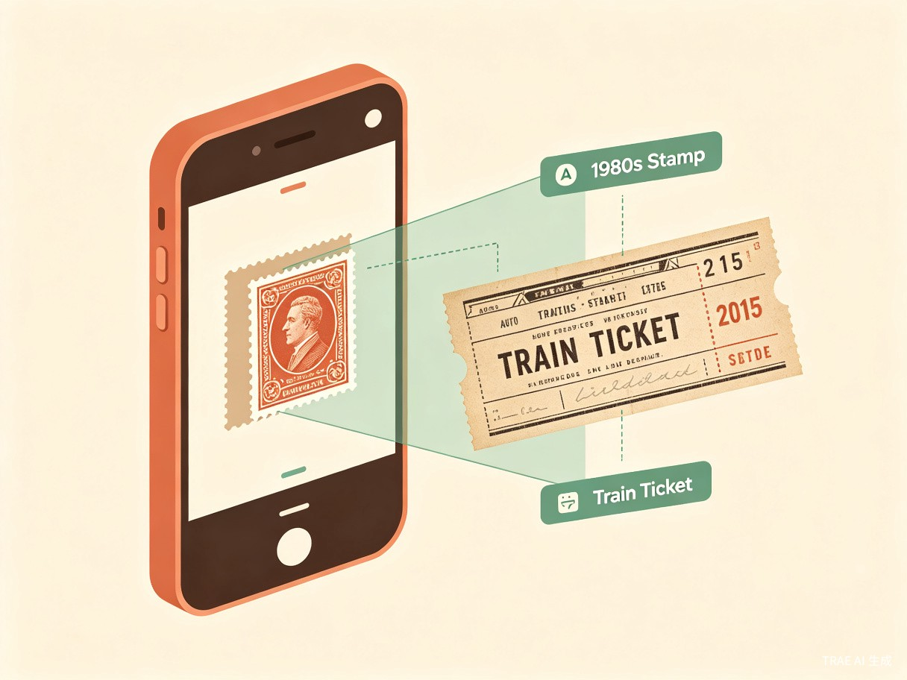
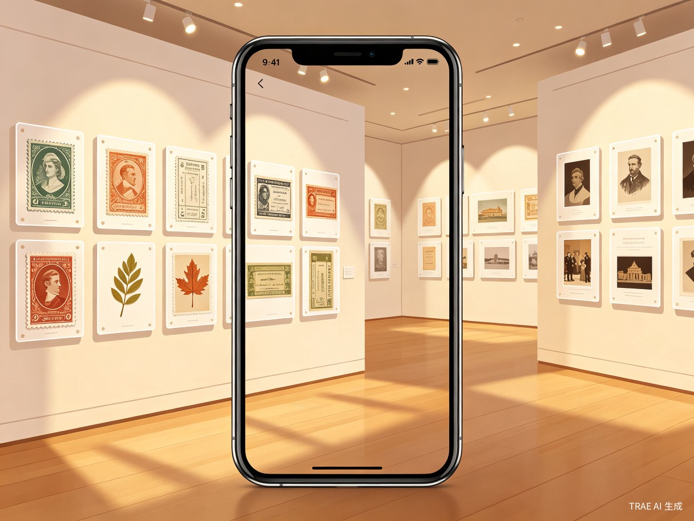

一款依托 AI 识别实现藏品数字化存档，支持用户自主搭建公开或私密线上展馆的生活娱乐类 App
拍照上传邮票、动植物实拍、旧证件、纪念小物等藏品，AI 自动识别物品信息，生成分类标签与客观科普介绍
所有电子藏品可自由排版组合，一键打造专属线上展览，几分钟就能完成一场完整策展
展馆可设为仅自己查看的私密模式，也能公开分享给同好浏览，收藏不再只能独自欣赏
从拍照识别到策展分享，三步轻松完成藏品数字化

无需手动输入，拍照即识别。AI 引擎自动分析藏品类型、年代、特征，生成结构化标签与科普介绍，让每一件藏品都拥有专业的"身份证"。

自由拖拽排版，多种展厅模板可选。将零散藏品组合成主题展览，支持时间线、分类墙、故事线等多种策展形式。
面向各类收藏爱好者与怀旧人群，解决实体藏品保存与展示的难题
藏品数量庞大，分类整理耗时，缺少专业展示平台
拍摄的花草昆虫难以系统归档，缺乏科普标注工具
车票、奖状、旧照片承载回忆，存放累赘却丢弃可惜
想要低成本办个人藏品展，却受限于场地与布置成本
实体藏品面临受潮、虫蛀、氧化等风险
搬家整理时容易丢失，回忆随之消逝
无实用功能却占空间，丢弃又于心不忍
线下办展场地、布置成本高昂
普通相册无分类，无法系统梳理收藏体系
效率提升、社会价值与商业潜力的三重驱动
告别现实繁琐收纳、防潮保养、空间存放等难题，拍照即可完成藏品数字化归档，AI 自动分类标注，整理收藏内容省时省力。线上展馆随心编辑，几分钟就能完成一场完整策展，操作门槛极低。
为大众搭建轻量化文化收藏载体，让小众爱好拥有展示空间，留住普通人的生活记忆与小众收藏文化，拉近收藏爱好者之间的交流距离，让收藏不再是只能独自欣赏的爱好。
传统线下策展成本高、受众范围受限，本产品零门槛线上策展模式大幅降低展示成本，拓宽藏品分享渠道。平台可汇聚各类收藏圈层用户，衍生藏品交流、线上打卡、主题展馆活动等运营内容，具备可持续运营的商业潜力。
随时随地，记录与分享生活中的珍贵收藏
翻出家中的老物件，拍照上传永久保存纪念藏品，不再担心遗失或损坏
拍到珍稀花草、昆虫，即时识别归档，建立个人自然观察日记
向亲友、同好展示收藏成果，收获共鸣与交流，找到志同道合的伙伴
在私密展馆中独自翻看藏品，重温过往记忆，享受独处的治愈时光